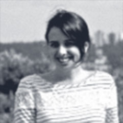

O UPDATE busca contribuir para a atualização da democracia latinoamericana através do fortalecimento do campo de inovação política e das práticas políticas emergentes que atuam na região e promovem experimentos disruptivos. Para tal, o Update se configura como um laboratório de compreensão, difusão e promoção da troca entre os atores do campo, em busca de uma América Latina mais democrática, com práticas políticas renovadas e mais participativas, organizações e indivíduos mais atuantes, para a construção de sociedades menos desiguais, mais justas e mais inclusivas.
O século XXI apresenta novas demandas e possibilidades para a política.
De acordo com Yoshai Benkler, autor de A riqueza das Redes, vivemos uma transição da sociedade industrial para a sociedade interconectada. No campo da política, essa transformação se apresenta na possibilidade de uma democracia mais participativa. Moisés Naim, autor de O fim do poder, afirma que estamos vendo o surgimento de uma onda avassaladora de inovação política no mundo, que se equipara em caráter disruptivo ao que se observa em outros setores econômicos e sociais e que apresenta a possibilidade de recuperar a crença dos cidadãos nas instituições democráticas.
A necessidade dessa reinvenção se apresenta na forma de uma crise de representatividade globalizada, evidenciada a partir da crise financeira de 2008. De lá para cá vimos, como sintomas de uma crise de representatividade, centenas de protestos que vem acontecendo em todo mundo.
Além disso, também podemos observar uma outra crise, institucional, que se manifesta na dificuldade das instituições em dar vazão aos anseios coletivos dos indivíduos. Nesse sentido, os partidos políticos perderam a capacidade de atrair pessoas para dar continuidade a suas construções, e mesmo as ONGs e movimentos sociais, que começaram a suprir essa carência nos últimos 20 anos, têm sentido cada vez mais a mesma dificuldade.
Como pano de fundo das crises institucional e de representatividade, observamos uma questão perigosa: a escassez de referências positivas. Esta dificuldade em encontrar possíveis soluções para os desafios vividos na política do século XXI e a falta de referências afasta os cidadãos da construção de alternativas e prolonga as crises institucional e de representatividade.
Entretanto, ao olharmos com cuidado para o cenário mundial, observamos o surgimento de um campo que aponta para novas possibilidades - o campo das práticas políticas emergentes. Esse campo atua na fronteira dos processos democráticos, expandindo os limites de possibilidades de interação entre o cidadão e o Estado.
Os atores do campo de inovação política estão desenvolvendo experimentos em todo o mundo, de diferentes formas, em diferentes contextos, com diferentes objetivos. Observamos que esses experimentos apontam possibilidades de caminhos para atualizar a política do século XXI. Nesse sentido, compreender com cuidado esse campo possibilita visualizar com maior clareza os caminhos para a superação da crise de representatividade e da crise institucional, assim como a criação de referências para potencializar essa onda avassaladora de transformação na política.
-

Beatriz Pedreira é cientista social. Tem onze anos de experiência em inovação pública e política. Recentemente foi co-realizadora da pesquisa Sonho Brasileiro da Política e do projeto Jogo da Política, uma metodologia de educação política para jovens.
-
 Caio Tendolini é economista e apaixonado por projetos coletivos de impacto positivo na sociedade. Participou da rede Fora do Eixo, co-fundou o Toque no Brasil, o Canal Wings for Change, o Instituto Companheiros do Txai e a Rede Sustentabilidade. Atualmente, trabalha numa república criativa chamada Estufa, onde colabora com o Catarse, a Rede Sustentabilidade, dentre outros.
Caio Tendolini é economista e apaixonado por projetos coletivos de impacto positivo na sociedade. Participou da rede Fora do Eixo, co-fundou o Toque no Brasil, o Canal Wings for Change, o Instituto Companheiros do Txai e a Rede Sustentabilidade. Atualmente, trabalha numa república criativa chamada Estufa, onde colabora com o Catarse, a Rede Sustentabilidade, dentre outros. -
 Rafael Poço é advogado e ativista de causas socioambientais e do fortalecimento da democracia. Trabalhou no Ministério Público, em organizações não-governamentais e sempre atuou em projetos coletivos de defesa de direitos, promoção da sustentabilidade e da cidadania. Recentemente foi assessor de Marina Silva na campanha presidencial de 2014.
Rafael Poço é advogado e ativista de causas socioambientais e do fortalecimento da democracia. Trabalhou no Ministério Público, em organizações não-governamentais e sempre atuou em projetos coletivos de defesa de direitos, promoção da sustentabilidade e da cidadania. Recentemente foi assessor de Marina Silva na campanha presidencial de 2014. -
 Tulio Malaspina é formado em comunicação social com especialização em marketing, trabalha como consultor em planejamento estratégico e mobilização. É fundador da SustentaLab e colaborador na Escola de Ativismo.
Tulio Malaspina é formado em comunicação social com especialização em marketing, trabalha como consultor em planejamento estratégico e mobilização. É fundador da SustentaLab e colaborador na Escola de Ativismo.
Desde sua fundação, o Update recebeu investimentos de fundações e recursos financeiros de pessoas físicas.
- Drica Guzzi
- Maria Alice Setubal
- Gisela Moreau
- Fundação AVINA
- Fundação Porticus
- Instituto Arapyau
- Instituto PDR
- Open Society Foundation
| RECEITAS | 283,139.00 |
| Organizações sociais | 138,139.00 |
| Doações pessoas físicas | 145,000.00 |
| DESPESAS | 293,573.12 |
| Despesas institucionais | 107,110.00 |
| Despesas com pesquisa e tecnologia | 143,619.65 |
| Despesas com viagens e eventos | 10,044.46 |
| Aluguel de escritório | 18,649.01 |
| Taxas administrativas | 14,150.00 |
| RESULTADO DO EXERCÍCIO | 10,434.12 |
Juliana Nolasco, Pedro Abramovay, Pablo Collado, Lúcia Nader, Eduardo Rombauer, Talita Montiel, Raul Torres, Guilherme Turri, Manoela Miklos, Matias Bianchi, Ana Carolina Evangelista, Oliver Stuenkel, Gabi Juns, Luiz Eduardo Soares, Carla Mayumi